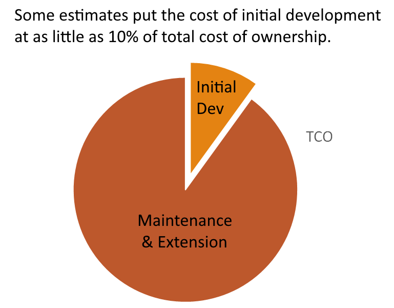
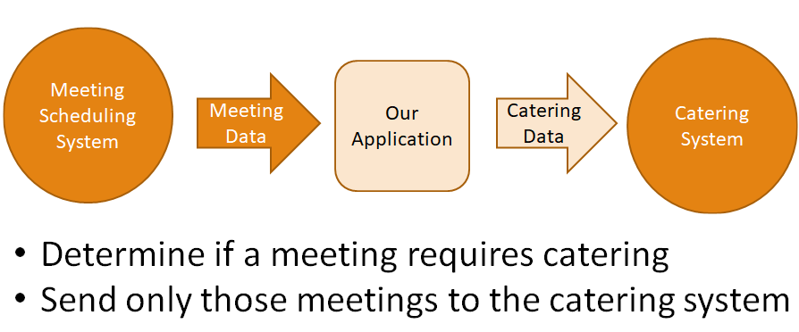
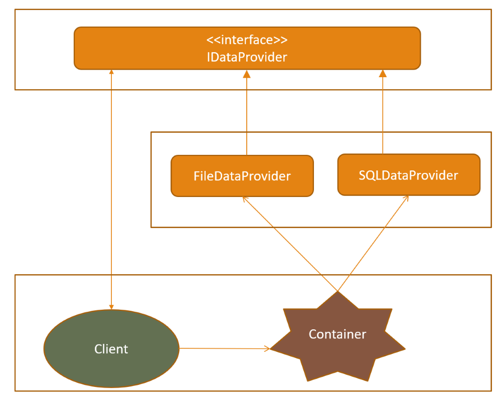
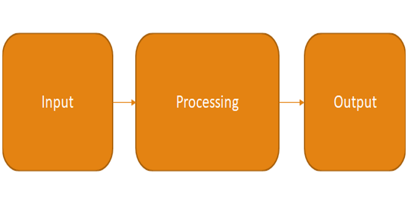
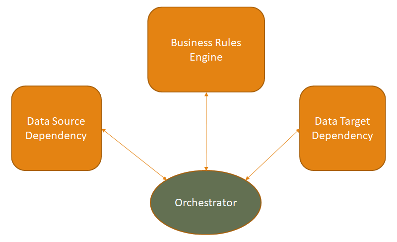
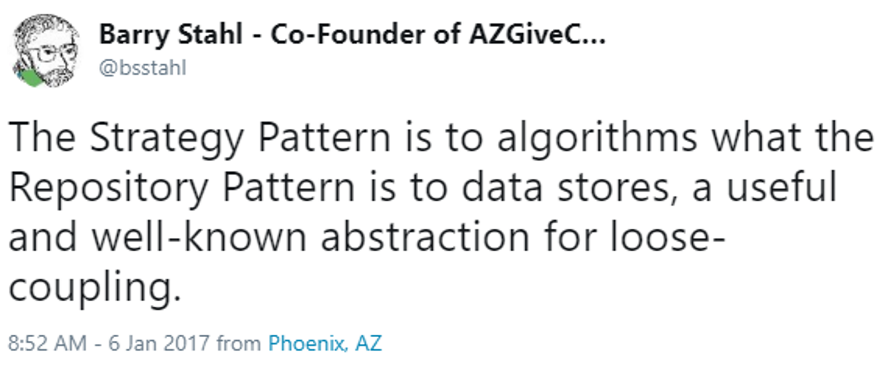
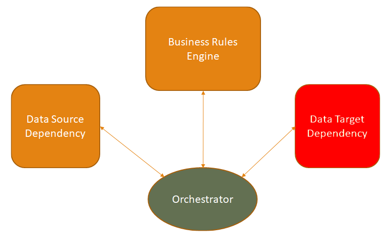

Design Patternsfor Loosely Coupled ApplicationsBarry S. StahlMicrosoft .NET MVPPhysics & Math Nerd@bsstahl@cognitiveinheritance.comhttps://CognitiveInheritance.com |

|
Favorite Physicists & Mathematicians
Favorite Physicists
Other notables: Stephen Hawking, Edwin Hubble, Leonard Susskind, Christiaan Huygens |
Favorite Mathematicians
Other notables: Daphne Koller, Grady Booch, Leonardo Fibonacci, Evelyn Berezin, Benoit Mandelbrot |
Fediverse Supporter
|

|
Some OSS Projects I Run
- Liquid Victor : Media tracking and aggregation [used to assemble this presentation]
- Prehensile Pony-Tail : A static site generator built in c#
- TestHelperExtensions : A set of extension methods helpful when building unit tests
- Conference Scheduler : A conference schedule optimizer
- IntentBot : A microservices framework for creating conversational bots on top of Bot Framework
- LiquidNun : Library of abstractions and implementations for loosely-coupled applications
- Toastmasters Agenda : A c# library and website for generating agenda's for Toastmasters meetings
- ProtoBuf Data Mapper : A c# library for mapping and transforming ProtoBuf messages
http://GiveCamp.org

Achievement Unlocked

Why Loose Coupling
Application TCO
|
 |
Loose Coupling Reduces TCO
|

|
The SOLID Principles
- S - Single Responsibility Principle
- O - Open/Closed Principle
- L - Liskov Substitution Principle
- I - Interface Segregation Principle
- D - Dependency Inversion Principle
The SOLID Principles
- S - Single Responsibility Principle
O - Open/Closed PrincipleL - Liskov Substitution PrincipleI - Interface Segregation Principle- D - Dependency Inversion Principle
Agenda
Design Principles
- The Single Responsibility Principle
- The Dependency Inversion Principle
A Sample Tightly-Coupled Application
Design Patterns
- Data Abstraction using the Repository Pattern
- Dependency Inversion using the Dependency Injection Pattern
- Logic Abstraction using the Strategy Pattern
The Single Responsibility Principle
A class should have only one reason to change
- A class should have 1 and only 1 role
- A class should represent 1 and only 1 abstraction
Also applies to modules and methods
SRP - Code Smells
BOLO for when an object's code has to be changed for more than one reason
- database field name AND business rule
- business rule AND presentation logic
The Dependency Inversion Principle
Entities should depend on abstractions, not on concrete implementations
- A class should not have knowledge of its dependencies
- A class should only have knowledge of the capabilities its dependencies provide
DIP - Code Smells
BOLO for when an object needs to know details of its dependencies
- Business rules are aware of storage details
- UI logic knows specifics of business rules
- Validation is a common exception
Our Demo Application

Demo - A Tightly Coupled Application
A Tightly Coupled Application
Our App Violates SRP
- Adding a field in the input file requires changes to the business-rule classes
- Changing the order of fields in the output file requires changes to the business-rule classes
- The Month and Meeting classes have multiple reasons to change
Our App Violates DIP
- Knowledge of the input stream is required to process the data
- Knowledge of the output stream is required to produce the results
The 3 primary aspects of this application, the input, output & business-rules are tightly coupled
Design Patterns
An abstract solution to a well known problem
- Design Patterns can help implement this architecture
- Provide a prototype to follow for implementation
- Provide a common language to understand the solution
The Facade Pattern
Facade - A simplified view of an API that fronts a more complicated interface
- Goals of a Facade
- Abstract the caller from the underlying implementation
- Simplify the API for the caller
The Repository Pattern
Repository - A somewhat standardized facade that fronts a data-store
Goals of a Repository
- Abstract the caller from the underlying implementation
- Simplify the API for the caller
Differences from other Facades
- Specific to data stores
- Have a generally accepted basic structure
Read Repository
- IMeetingReadRepository
- GetAllMeetings()
- GetMeetingById(Id)
- GetMeetingsByDateRange(startDate, endDate)
Write Repository
- IMeetingWriteRepository
- SaveMeeting(meeting)
- SaveMeeting(Id, property1, property2, ...)
We Really Do Change Data Stores
- You have changed data stores if:
- You tested middle-tier logic in isolation (without testing the DB)
- You changed from a file-source to a relational store or web-service
- You added an API layer in front of an existing DB
- You added a caching layer in front of a data source
- You moved from a local DB to a cloud implementation
Implementing an Abstraction
public interface IMeetingReadRepository { IEnumerable<Meeting> GetAllMeetings(); }
public class FileMeetingReadRepository : IMeetingReadRepository
{
private Path _sourceFilePath;
public FileMeetingReader(Path sourcePath)
{
_sourceFilePath = sourceFilePath;
}
public IEnumerable<Meeting> GetMeetings()
{
// Load the meetings from the file
}
}
A Less Tightly Coupled Application
Our App Violates SRP- Business logic and data storage can change details independently
Our App Still Violates DIP
- Knowledge of the data source is required to access the input data
- Knowledge of the input implementation is required to create the output
Dependency Injection
An implementation of the Dependency Inversion Principle that provides the concrete implementations of abstract dependencies to client objects
- Goals of Dependency Injection
- Abstract the caller from knowledge of implementation details
Dependency Injection Frameworks
Tools for implementing Dependency Injection - Configured to hold the concrete implementations of dependencies
Goals of DI Frameworks
- Abstract the caller from knowledge of implementation details
- Provide a well-known interface for Service Location
Usage
- Can be "wired-up" to automate dependency resolution
- Can often be queried for a dependency by interface
- Some containers will also manage the life-cycle of the dependencies
Loose Coupling with DI

Querying for a Dependency
A DI Framework can be queried for a dependency if the container is passed to the client which requests the dependency by its interface.
IServiceProvider _container;
public Engine(IServiceProvider container)
{
_container = container;
}
public void CreateData()
{
IMeetingRepository repo = _container.GetService<IMeetingRepository>();
// Additional functionality here
}
DI Supports Testability
Using DI, dependencies can be substituted with Fakes or Mocks for testing.
public void ShouldReturnFalseIfMeetingIsOverBeforeNoon()
{
// Arrange - Add mock repo to container
IMeetingRepository repo = Mock.Of<IMeetingRepository>();
container.AddSingleton<IMeetingRepository>(repo);
// Act - Run the test in isolation
var target = new Engine(container);
target.Process(myMeeting);
// Assert - Add asserts here
}
A Fairly Loosely Coupled Application
Our App Violates SRP- Business logic and data storage can change independently
Our App Violates DIP- No knowledge of how data is stored is required to access the data
We now have a new set of mixed concerns (SRP violation)
- Our business logic is mixed-in with our orchestration logic
A Traditional Architecture

Business vs Orchestration Logic

The Strategy Pattern
An implementation of a facade that fronts an algorithm or other logic
Goals of a Strategy
- Abstract the caller from the underlying implementation
- Simplify the API for the caller
Differences from other Facades
- Specific to logic
- Are less likely to contain side-effects (more functional)
The Strategy Pattern Analogy

Implementing a Strategy
Using the Strategy's abstract interface any number of different strategies can be used to act on the data and can be easily swapped.
public interface ICateringStrategy { bool ShouldMeetingBeCatered(start, len) }
public class CateringStrategyEngine: ICateringStrategy
{
public bool ShouldMeetingBeCatered(start,len)
{
// Logic here
return result;
}
}
Demo - A Loosely Coupled App
What Have We Done?
|
 |
Your Mission
|
Resources
Demos & Articles
- This Slide Deck: https://DesignPatternsForLooseCoupling.AzureWebsites.net
- My Blog: https://www.CognitiveInheritance.com
- Code Samples: https://www.github.com/bsstahl/DesignPatternsForLooseCoupling
Patterns
Tooling